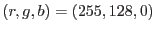
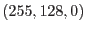
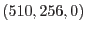
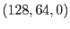

The following examples demonstrates how the color of a pixel in the final image is computed. It is assumed there are only two events and the image should be color-coded using the event energy as scalar attribute: One pixel receives one photon of 1 keV and the other receives two photons of 1 keV. Assume that in the color table 1 keV corresponds to the color . After adding all events the first pixel gets color  and the second . Then the image is normalized: Divide by the largest value in the image and multiply by 255. Now the first pixel has color  and the second . Note that they have the same color but a different intensity. So the color indicates the distribution of energy, the intensity indicates the flux.
Some more examples using the following color table:
1 keV: (255,128,0)
8 keV: (0,50,100):
| photons times energy | corresponding color | normalized against a global max of 1800 |
| 1x1keV | 255 128 0 | 36 18 0 |
| 2x1keV | 510 256 0 | 72 36 0 |
| 1x8keV | 0 50 100 | 0 7 14 |
| 1x1keV,1x8keV | 255 178 100 | 36 25 14 |
| 2x1keV,2x8keV | 510 356 200 | 72 50 28 |
Please note: The actual generation of the red, green, and blue component images is done through the task evselect. xcolorcod therefore inherits all of evselect's image extraction parameters which allows to control the image generation process, e.g., binning, windowing, etc.